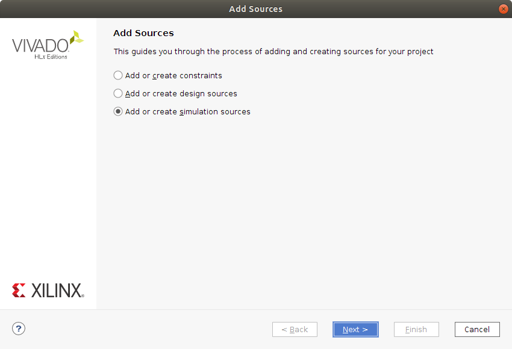
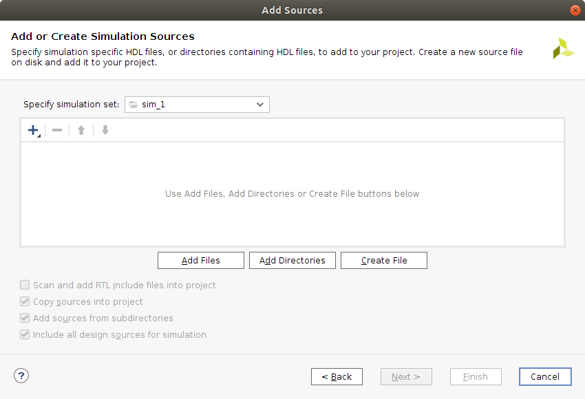
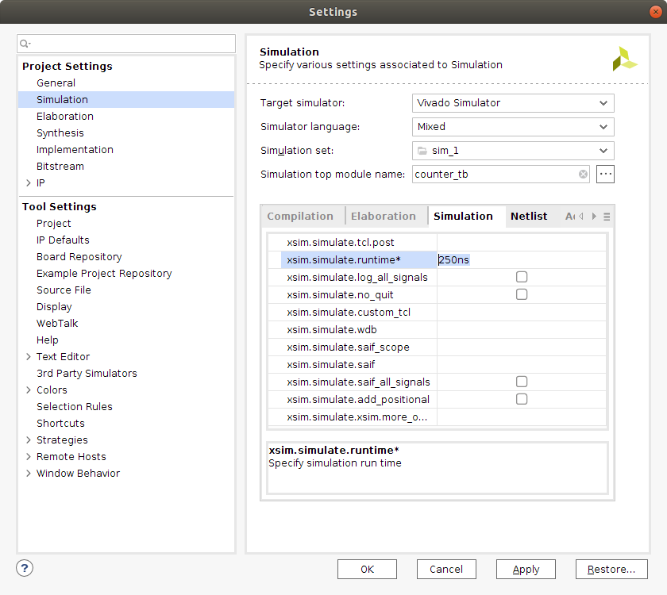
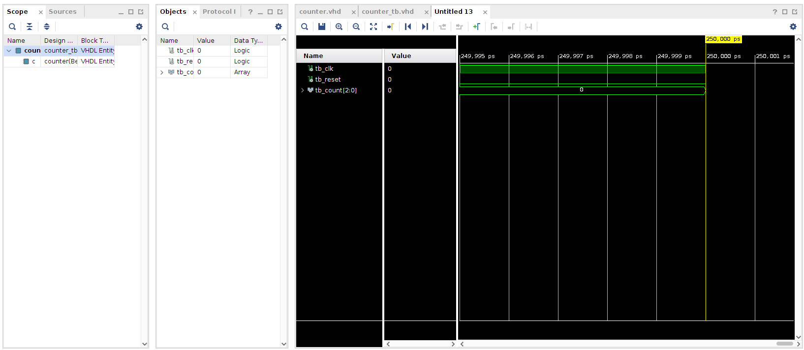
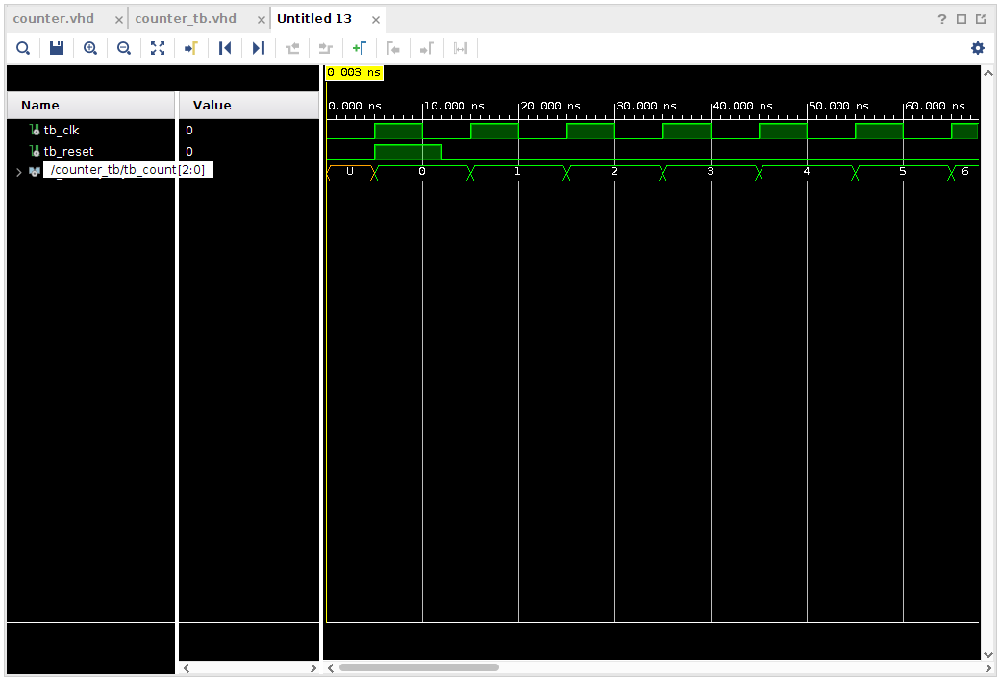
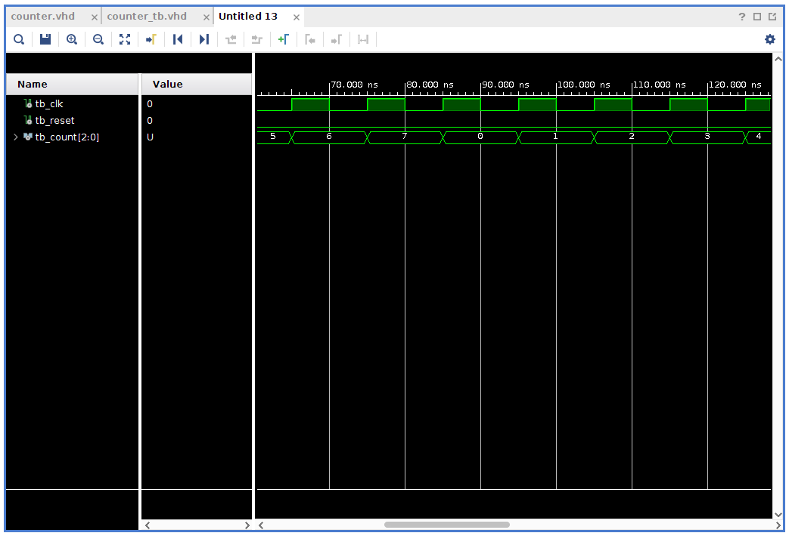

This is a follow-up to the previous post titled Getting started with the Nexys A7 and Vivado. I feel that simulation may be an important tool to learn how to use. I hope to be continuing to learn about hardware description and simulation will surely turn out to be an important aspect of that.
To get started with this, let's create a project using the steps from the earlier post in the series. We continue from the point where the Vivado GUI starts up and we have not yet started creating any source files.
The plan is to implement a 3 bit counter that will count at each tick of the clock through the sequence 0,1,2,..,7 and then repeat (start from 0 again). There will be reset signal that sets the state of the counter to the zero state. Then onwards the counter will increment at each rising edge of the clock signal. The current value of the counter will be output as a signal using a std_logic_vector of 3 bits.
So here is the entity or interface that I will try to implement.
entity counter is
Port ( clk : in std_logic;
reset : in std_logic;
count : out std_logic_vector(2 downto 0)
);
end counter;
The implementation of this will have an internal state signal called counter_state and it will be of the type unsigned(2 downto 0). This is because we can perform arithmetic on these unsigned signals easily and they can also be easily converted into an std_logic_vector for use in the count signal.
Let's take a look at the implementation.
architecture Behavioral of counter is
signal counter_state : unsigned(2 downto 0);
begin
count <= std_logic_vector(counter_state);
counter_proc: process(clk, reset)
begin
if (reset = '1') then
counter_state <= "000";
elsif rising_edge(clk) then
counter_state <= counter_state + 1;
end if;
end process;
end Behavioral;
What this means is that count should always have the value of the counter_state (converted to an std_logic_vector). Then there is a process that is sensitive to clk and reset. If reset is high then the internal state is set to 0. The reset here is independent of the clock which is called an asynchronous reset. If reset is not high and there is a rising edge on the clock, then the internal counter state is incremented. Nothing special needs to be done to make the counter wrap around to zero it will happen automatically when trying to increment the value 7 as there are only 3 bits.
The complete VHDL listing looks as follows:
library IEEE;
use IEEE.STD_LOGIC_1164.ALL;
use IEEE.NUMERIC_STD.ALL;
entity counter is
Port ( clk : in std_logic;
reset : in std_logic;
count : out std_logic_vector(2 downto 0)
);
end counter;
architecture Behavioral of counter is
signal counter_state : unsigned(2 downto 0);
begin
count <= std_logic_vector(counter_state);
counter_proc: process(clk, reset)
begin
if (reset = '1') then
counter_state <= "000";
elsif rising_edge(clk) then
counter_state <= counter_state + 1;
end if;
end process;
end Behavioral;
Now it would be nice to be able to get some kind of indication on whether or not this counter will behave appropriately. That is where the simulation comes in.
To simulate the counter we need to create a kind of testing harness for it. This harness will instantiate a counter and provide stimulus for it. The stimuli the counter will need is the clk and the reset signals.
To create a testbench right click in the Sources pane of the Project Manager and select Add Sources. Select Add or create simulation sources and click Next. On the next screen press Create File and give it a name, for example counter_tb. Click Finish and then just click Ok in the Define Module dialog that pops up.
| Add Sources | Add Simulation Sources |
|---|---|
|  |  |
Now you should have a counter_tb.vhd file listed in the Sources pane under Simulation Sources. Double click on the counter_tb to open it in an editor window.
The testbench will define some local signals that it connects to an instance of our counter. This is done using port map( ... ) syntax. Then, the testbench should provide a clock signal and perform a reset. If all works out, we should see the counter count.
A testbench is just another VHDL program. So it has an entity and an architecture. The entity declaration is empty though. No external interface on this one.
entity counter_tb is
end counter_tb;
Then the architecture:
architecture Behavioral of counter_tb is
signal tb_clk : std_logic := '0';
signal tb_reset: std_logic := '0';
signal tb_count: std_logic_vector(2 downto 0) := "000";
begin
c: entity work.counter port map (reset => tb_reset, clk => tb_clk, count => tb_count);
tb_reset <= '1' after 5ns, '0' after 12ns;
tb_clk <= not tb_clk after 5ns;
end Behavioral;
We define three signals, tb_clk, tb_reset and tb_count. I preceded the signal names with tb but I really don't think that is necessary. The signals here have default values, which is fine for a testbench but less ok for hardware to be synthesized as I understand it currently (This seems like something that would be very tricky and wasteful to build into hardware).
Next the entity is instantiated and the port map is performed. In my opinion the port map is using a very confusing syntax. The arrow implies to me that there is a direction but rather It seems that, for example reset => tb_reset means that these signals are connected (As if a wire was soldered between the two).
Next we provide some stimulus. tb_reset will be active for a short while starting 5ns after simulation starts. The tb_clock signal will oscillate with 10ns period throughout simulation.
Save the file with CTRL+s.
The complete testbench VHDL code listing looks like this:
library IEEE;
use IEEE.STD_LOGIC_1164.ALL;
entity counter_tb is
end counter_tb;
architecture Behavioral of counter_tb is
signal tb_clk : std_logic := '0';
signal tb_reset: std_logic := '0';
signal tb_count: std_logic_vector(2 downto 0) := "000";
begin
c: entity work.counter port map (reset => tb_reset, clk => tb_clk, count => tb_count);
tb_reset <= '1' after 5ns, '0' after 12ns;
tb_clk <= not tb_clk after 5ns;
end Behavioral;
Before we jump to simulation, let's go into the settings and set for how long the simulation should be run. You find the settings near the top of the Flow Navigator under Project Manager. Click on Settings

Go into the Simulation settings and locate the Simulation tab and the xsim.simulate.runtime and set it to something like 250ns. Then click Apply and Ok.
Now, in the Flow Navigator under Simulation you find Run Simulation. Click on Run Simulation and select Run Behavioral Simulation. The contents of the GUI on the right side should now change and display something like this.

You can zoom in and out in the window showing the waveforms by using CTRL + mouse_scroll_wheel.
| Simulation waves | Simulation waves zoomed |
|---|---|
|  |  |
Lots left to look into when it comes to simulation but I feel that it is more fun to do things like that when there is a need. So, this is enough simulation for today. I hope to have a moment to try out some more VHDL programming in a not to distant future.
As usual, I would love input and suggestions. Do not be afraid to poke me.
Thanks for reading and have a good day!
Please contact me with questions, suggestions or feedback at blog (dot) joel (dot) svensson (at) gmail (dot) com or join the google group .
© Copyright 2020 Bo Joel Svensson
This page was generated using Pandoc.